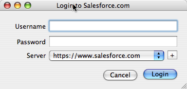

Entourage - Add an Email Activity
You can easily take an email and create a completed Email Activity in Salesforce.com.
- Select the relevant email in Entourage.

- From the Button bar, click "Add Email"

- Login when prompted. (You'll only need to login the first time after Maildrop starts)
 - The Add Email window will open to allow you to specify who and what the Email is related to.

See Add Email Window for more details - Click create, and the created activity will be opened in the browser.